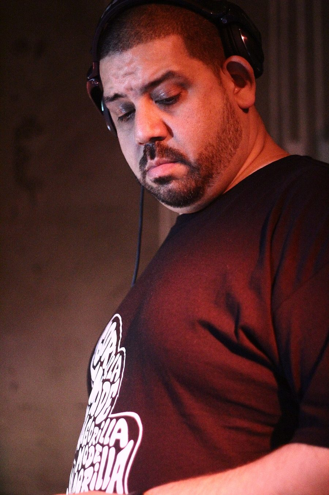

Kenny Dope joins Pacha NYE



Pacha’s New Years Eve bash at Ivy just got a little bigger. It’s been confirmed that house music stalwart and Masters at Work member Kenny Dope will be joining the party, playing alongside the names that have already been confirmed including Sebastian Ingrosso, Claude VonStroke, Sidney Samson and the other top secret ‘very special international guest’.
Kenny has been a name in house music and hip hop for 25 years, most famous for his work with Mike Delgado and Little Louie Vega as Masters at Work, where he was responsible for some of the genre’s most memorable productions and remixes throughout the 90s. He’s had his hands full ever since, whether it’s as a DJ, a producer or the business brains behind the Kay-Dee Records imprint.
Pacha debuts at Ivy this New Years Eve, 2nd-release tickets on sale now at ITM.